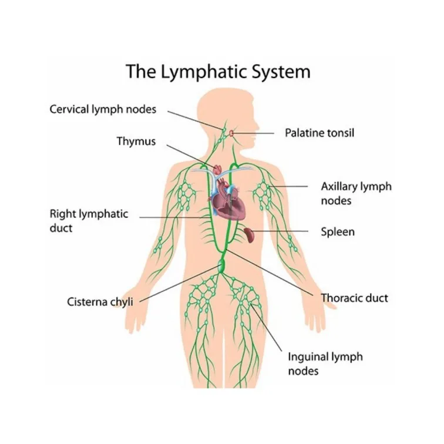
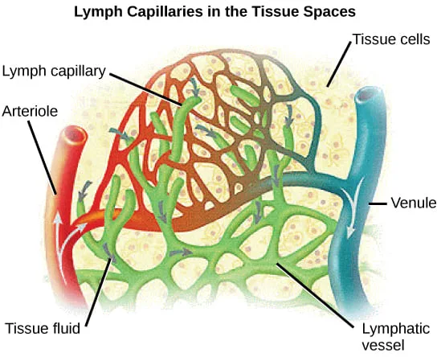
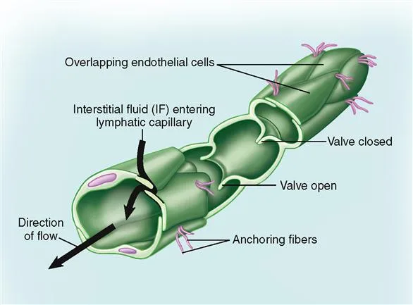
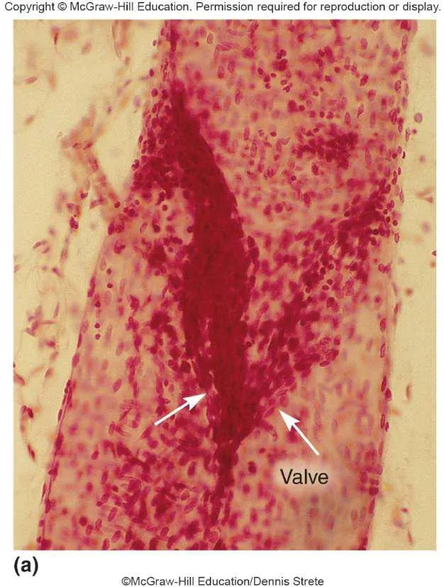
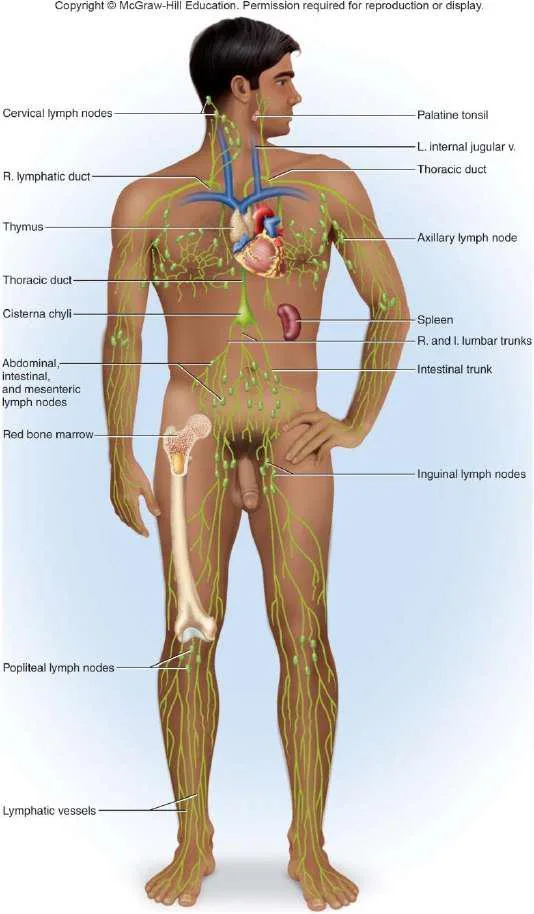
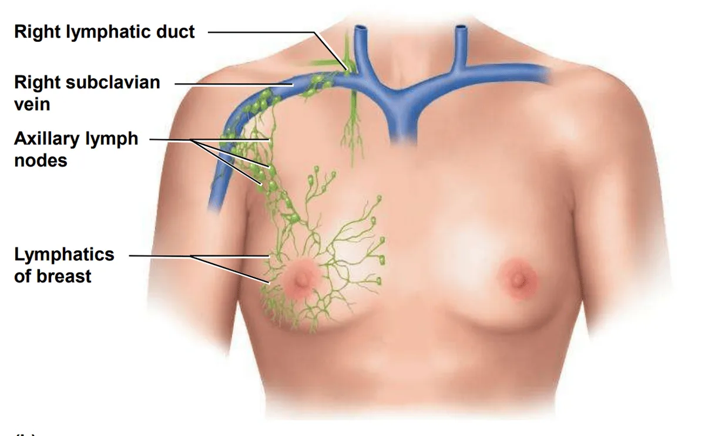
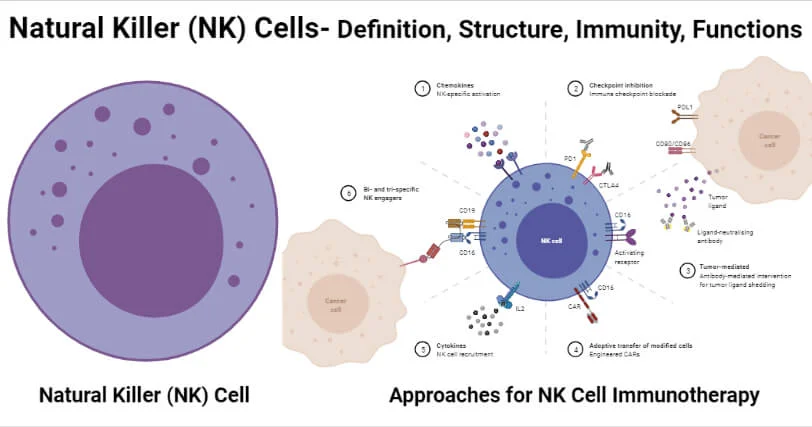
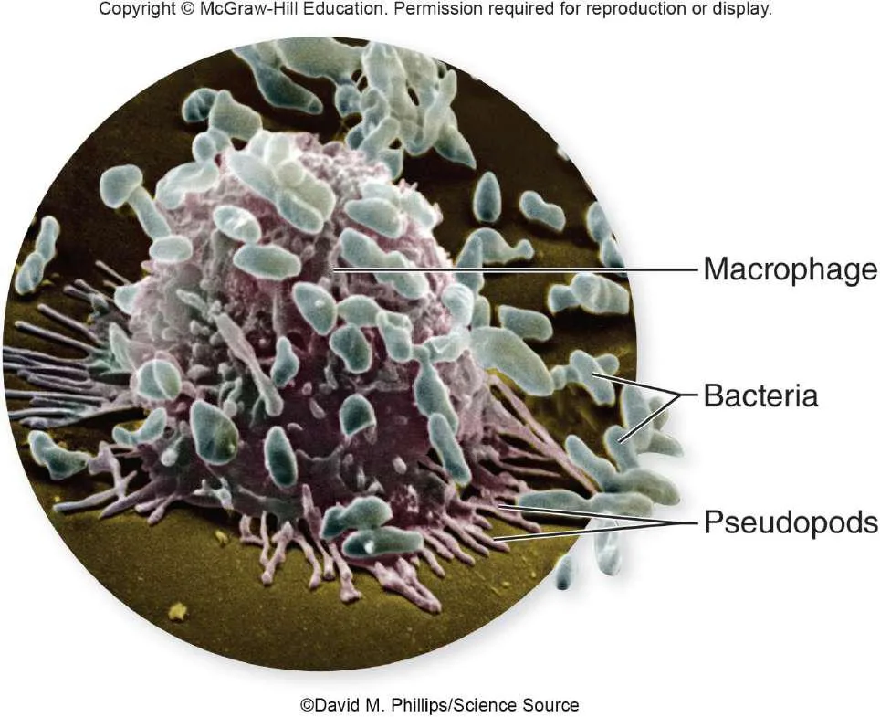

Expanded Nursing Uganda Explanation
Lymphatic system should be understood beyond a short definition. Link the concept to patient history, focused assessment, common risks, nursing priorities, documentation and evaluation of outcomes.
Contents — 43 sections (tap to expand)
01 I. Introduction
The human body is home to a vast number of bacterial cells, estimated to be at least 10 times more than human cells.
Some of these bacteria are beneficial for health (e.g., aiding digestion).
Others are potentially disease-causing ( pathogenic ).
The Immune System is a functional system rather than a distinct organ system. It consists of a cell population that inhabits all organs and defends the body from agents of disease.
Immune cells are especially concentrated in a true organ system called the Lymphatic System .
02 Functions of the Lymphatic System:
- Fluid Recovery: Recovers excess tissue fluid.
- Immunity: Inspects the recovered fluid for disease agents and activates immune responses.
- Lipid Absorption: Absorbs dietary lipids from the small intestine.
03 Fluid Recovery in Detail:
Fluid continually filters out of blood capillaries into the surrounding tissue spaces.
About 85% of this fluid is reabsorbed by blood capillaries.
The remaining 15% (amounting to 2-4 liters per day) and approximately half of the plasma proteins enter the lymphatic system and are eventually returned to the blood. This prevents edema (tissue swelling).
04 Immunity:
As the lymphatic system recovers fluid, it also picks up foreign cells, chemicals, and pathogens that may be present in the tissues.
This fluid passes through lymph nodes , where immune cells (lymphocytes and macrophages) monitor for foreign matter.
Detection of pathogens triggers a protective immune response.
05 Lipid Absorption:
Specialized lymphatic capillaries called lacteals within the small intestine are responsible for absorbing dietary lipids that cannot be absorbed directly into blood capillaries.
The fatty lymph in these vessels is called chyle.
06 Components of the Lymphatic System:
- Lymph: The recovered fluid.
- Lymphatic Vessels: Transport the lymph.
- Lymphatic Tissues: Aggregations of lymphocytes and macrophages within connective tissues.
- Lymphatic Organs: Structures with concentrated immune cells, separated from surrounding tissues by a connective tissue capsule.
07 Lymph:
Clear, colorless fluid, similar to plasma but with much less protein.
Originates as extracellular fluid drawn into lymphatic capillaries.
Chemical composition varies depending on location (e.g., fatty chyle from intestines, lymph rich in lymphocytes after passing through lymph nodes).
08 Lymphatic Capillaries (Terminal Lymphatics):
Microscopic vessels that penetrate nearly every tissue (absent from CNS, cartilage, cornea, bone, bone marrow).
Closed at one end.
Walls are single layer of endothelial cells with overlapping edges like roof shingles.
Endothelial cells are tethered to surrounding tissue by protein filaments.
Overlapping cells form valve-like flaps that open when interstitial fluid pressure is high (allowing fluid and large particles in) and close when it is low (preventing backflow).
09 Lymphatic Vessels (Structure and Organization):
Larger vessels are composed of three layers ( tunics ), similar to veins:
- Tunica interna: Endothelium and valves.
- Tunica media: Elastic fibers, smooth muscle (for rhythmic contraction).
- Tunica externa: Thin outer layer.
Converge into larger and larger vessels (collecting vessels, trunks, ducts).
Collecting vessels course through many lymph nodes.
10 Lymphatic Trunks and Collecting Ducts:
Six lymphatic trunks drain major portions of the body: Jugular, subclavian, bronchomediastinal, intercostal, intestinal (unpaired), and lumbar trunks.
These trunks merge into two collecting ducts:
- Right lymphatic duct: Receives lymph from the right arm, right side of head and thorax; empties into the right subclavian vein .
- Thoracic duct: Larger and longer; begins as the cisterna chyli in the abdomen (receives lymph from below diaphragm, intestinal, and lumbar trunks); ascends through the thorax receiving lymph from the left arm, left side of head, neck, and thorax; empties into the left subclavian vein .
Lymph is returned to the blood circulation via the Subclavian veins.
Major Lymphatic Vessels
11 Flow of Lymph:
Lymph flows under forces similar to those governing venous return, but there is no pump like the heart.
Flow is at low pressure and slower speed than venous blood.
Moved along by:
- Rhythmic contractions of the lymphatic vessels themselves (stretching stimulates contraction).
- Skeletal muscle pump .
- Arterial pulsation rhythmically squeezing lymphatic vessels.
- Thoracic pump (pressure changes during breathing) aids flow from abdominal to thoracic cavity.
- Valves prevent backward flow.
- Rapidly flowing blood in subclavian veins draws lymph into them.
Exercise significantly increases lymphatic return.
12 Major Lymphatic Cells:
- Natural killer (NK) cells
- T lymphocytes (T cells)
- B lymphocytes (B cells)
- Macrophages
- Dendritic cells
- Reticular cells
13 Natural Killer (NK) Cells:
Large lymphocytes that continually patrol the body for pathogens and diseased host cells.
Attack and destroy bacteria, transplanted cells, virus-infected cells, and cancer cells.
Recognize enemy cell and bind to it.
Release proteins called perforins (polymerize to create a hole in the plasma membrane).
Secrete protein-degrading enzymes called granzymes (enter through pore and induce apoptosis/programmed cell death).
14 T lymphocytes (T cells):
Mature in the thymus . Involved in cellular immunity and coordination. (Detailed development and function discussed later).
15 B lymphocytes (B cells):
Mature in bone marrow . Activation causes proliferation and differentiation into plasma cells that produce antibodies. Involved in humoral immunity. (Detailed development and function discussed later).
16 Macrophages:
Large, avidly phagocytic cells of connective tissue.
Develop from monocytes that emigrate from blood.
Phagocytize tissue debris, dead neutrophils, bacteria, and other foreign matter.
Process foreign matter and display antigenic fragments to T cells, acting as Antigen-Presenting Cells (APCs) .
17 Dendritic cells:
Branched, mobile APCs found in epidermis, mucous membranes, and lymphatic organs.
Alert immune system to pathogens that have breached the body surface.
18 Reticular cells:
Branched stationary cells that contribute to the stroma (structural framework) of a lymphatic organ.
19 IV. Lymphatic Tissues
Lymphatic (lymphoid) tissue: Aggregations of lymphocytes in the connective tissues of mucous membranes and various organs.
20 Diffuse lymphatic tissue:
Simplest form; lymphocytes scattered (not clustered).
Prevalent in body passages open to the exterior (respiratory, digestive, urinary, reproductive tracts).
Collectively called Mucosa-associated lymphatic tissue (MALT) .
21 Lymphatic nodules (follicles):
Dense masses of lymphocytes and macrophages that congregate in response to pathogens.
Constant feature of lymph nodes, tonsils, and appendix.
Peyer patches: Dense clusters in the ileum (distal portion of the small intestine).
22 V. Lymphatic Organs
Lymphatic organs: Anatomically well-defined structures containing lymphatic tissue.
Have a connective tissue capsule that separates lymphatic tissue from neighboring tissues.
23 Primary lymphatic organs:
Sites where T and B cells become immunocompetent (able to recognize and respond to antigens).
- Red bone marrow
- Thymus
24 Secondary lymphatic organs:
Immunocompetent cells populate these tissues; sites where immune responses are initiated.
- Lymph nodes
- Tonsils
- Spleen
25 Red Bone Marrow:
Involved in hemopoiesis (blood formation) and immunity (B cell maturation).
Soft, loosely organized, highly vascular material.
Separated from osseous tissue by endosteum.
As blood cells mature, they push through reticular and endothelial cells to enter sinusoids and flow into the bloodstream.
26 Thymus:
Member of endocrine, lymphatic, and immune systems.
Houses developing T lymphocytes (thymocytes).
Secretes hormones regulating T cell activity (thymosin, thymopoietin, etc.).
Bilobed organ in superior mediastinum.
Undergoes degeneration (involution) with age.
Fibrous capsule gives off trabeculae (septa) dividing the gland into lobes (cortex and medulla).
Reticular epithelial cells form the blood–thymus barrier (seals off cortex from medulla), preventing antigens from reaching developing T cells.
27 Lymph Nodes:
Most numerous lymphatic organs (about 450 in a young adult).
Serve two functions: Cleanse the lymph and act as a site of T and B cell activation.
Elongated, bean-shaped structure with a hilum (where vessels exit/enter).
Enclosed by a fibrous capsule with trabeculae dividing the interior into compartments.
Stroma of reticular fibers and reticular cells provides framework.
Parenchyma divided into cortex (with germinal centers where B cells multiply) and medulla.
Lymph enters through several afferent lymphatic vessels along the convex surface.
Lymph leaves through one to three efferent lymphatic vessels at the hilum.
28 Regional Concentrations:
Cervical (neck), Axillary (armpit), Thoracic (mediastinum), Abdominal (abdominopelvic wall), Intestinal and mesenteric (mesenteries), Inguinal (groin), Popliteal (back of knee).
29 Lymph Node Conditions:
- Lymphadenitis: Swollen, painful node responding to foreign antigen.
- Lymphadenopathy: Collective term for all lymph node diseases.
30 Lymph Nodes and Metastatic Cancer:
Metastasis: Cancerous cells break free from original tumor, travel to other sites, and establish new tumors.
Metastasizing cells easily enter lymphatic vessels.
Tend to lodge in the first lymph node they encounter ( sentinel node ).
Multiply there, eventually destroying the node; typically swollen, firm, and usually painless.
Tend to spread to the next node downstream.
Treatment (e.g., breast cancer) often involves removal of nearby lymph nodes to check for metastasis.
31 Tonsils:
Patches of lymphatic tissue at the entrance to the pharynx.
Guard against ingested or inhaled pathogens.
Covered with epithelium that forms deep pits: tonsillar crypts lined with lymphatic nodules. Pathogens get into crypts and encounter lymphocytes.
Inflammation is tonsillitis; surgical removal is tonsillectomy.
Three main sets: Palatine tonsils (posterior oral cavity margin, most infected), Lingual tonsils (root of tongue), Pharyngeal tonsil (adenoids, wall of nasopharynx).
32 Spleen:
The body’s largest lymphatic organ.
Parenchyma exhibits two types of tissue:
- Red pulp: Sinusoids filled with erythrocytes; filters old RBCs.
- White pulp: Lymphocytes, macrophages surrounding splenic artery branches; immune surveillance of blood.
33 Spleen Functions:
- Filters old, fragile RBCs ("erythrocyte graveyard").
- Blood cell production in fetus (minor in anemic adults).
- Monitors blood for foreign antigens (white pulp).
- Stabilizes blood volume (plasma transfers to lymphatic system).
Vulnerability: Highly vascular and vulnerable to trauma and infection.
Ruptured spleen requires splenectomy, which leaves the person susceptible to future infections, premature death.
34 Body's Lines of Defense:
- First line: Skin and mucous membranes (external barriers).
- Second line: Several nonspecific defense mechanisms (leukocytes, antimicrobial proteins, inflammation, fever).
- Third line: The immune system (adaptive immunity) - specific, with memory.
Nonspecific defenses: Guard equally against a broad range of pathogens.
Lack capacity to remember pathogens.
Include protective proteins, protective cells, and protective processes.
Specific or adaptive immunity: Body must develop separate immunity to each pathogen.
Body adapts to a pathogen and wards it off more easily upon future exposure (memory).
35 External Barriers:
- Skin: Mechanically difficult for microbes to enter. Toughness of keratin, dry, nutrient-poor. Acid mantle (lactic/fatty acids) inhibits bacterial growth. Contains antimicrobial peptides (dermicidin, defensins, cathelicidins).
- Mucous membranes: Line passages open to exterior. Protected by mucus (physically traps microbes) and lysozyme (destroys bacterial cell walls).
- Subepithelial areolar tissue: Viscous barrier of hyaluronic acid. Hyaluronidase (enzyme used by pathogens) makes it less viscous.
36 Leukocytes and Macrophages:
(See Section III above for cell types)
- Neutrophils: Wander connective tissue killing bacteria. Kill using phagocytosis/digestion or producing bactericidal chemicals (respiratory burst, killing zone).
- Eosinophils: Found in mucous membranes. Guard against parasites, allergens, other pathogens. Kill large parasites (superoxide, toxic proteins). Promote basophil/mast cell action. Phagocytize antigen–antibody complexes. Limit histamine/inflammatory chemicals.
- Basophils: Secrete chemicals aiding mobility/action of other leukocytes. Leukotrienes (activate/attract neutrophils/eosinophils). Histamine (vasodilator, increases blood flow). Heparin (inhibits clot formation, prevents impeding leukocyte mobility).
- Mast cells: Connective tissue cells similar to basophils; secrete similar substances.
- Lymphocytes: T, B, NK cells. (See Section III above for types; detailed adaptive roles later).
- Monocytes: Emigrate from blood into connective tissues and transform into macrophages.
- Macrophage system: All avidly phagocytic cells (except circulating leukocytes). Wandering macrophages (actively seek pathogens). Fixed macrophages (phagocytize what comes to them) e.g., Microglia (CNS), Alveolar macrophages (lungs), Hepatic macrophages (liver).
37 Antimicrobial Proteins:
Inhibit microbial reproduction, provide short-term, nonspecific resistance.
- Interferons: Secreted by virus-infected cells. Alert neighboring cells (bind to receptors, activate second messengers). Alerted cells synthesize antiviral proteins. Also activate NK cells and macrophages. Activated NK cells destroy infected/malignant cells.
- Complement system: Group of 30+ globular proteins synthesized mainly by liver. Circulate in inactive form, activated by pathogen presence. Powerful contributions to nonspecific resistance and adaptive immunity.
38 Complement System Activation Pathways:
- Classical pathway: Requires antibody bound to antigen (part of adaptive immunity). Ag-Ab complex changes antibody shape, exposing complement-binding sites. C1 binding sets off cascade (complement fixation).
- Alternative pathway: Nonspecific, does not require antibody. C3 breaks down to C3a/C3b; C3b binds directly to targets (tumor cells, viruses, bacteria, yeasts). Triggers autocatalytic cascade forming more C3.
- Lectin pathway: Nonspecific. Lectins (plasma proteins) bind to carbohydrates on microbial surface. Sets off C3 production cascade.
39 Mechanisms of Action of Complement Proteins:
- Inflammation: C3a (and C5a) stimulate mast cells/basophils to secrete histamine/inflammatory chemicals. Activate and attract neutrophils/macrophages. Speeds pathogen destruction in inflammation.
- Immune clearance: C3b binds Ag-Ab complexes; RBCs transport complexes to liver/spleen. Macrophages strip/destroy complexes. Principal means of clearing foreign antigens from bloodstream.
- Phagocytosis: C3b assists by opsonization (coats microbial cells, serves as binding sites for phagocytes, makes foreign cell more appetizing).
- Cytolysis: C3b splits C5 to C5a/C5b; C5b binds enemy cell. Attracts more complement proteins forming membrane attack complex (MAC). MAC forms a hole in target cell; electrolytes leak, water flows in, cell ruptures.
40 Nursing Uganda Clinical Lens
Use Lymphatic system as a practical nursing topic, not only a memorized definition. Prioritize airway, breathing, circulation, pain, asepsis, wound healing and early complication detection.
- What to understand first: define lymphatic system, identify the normal or expected pattern, then explain what changes when the patient is unwell.
- Why it matters in care: the nurse must recognize risk early, explain findings clearly, document accurately and know when to escalate.
- How to revise it: connect each point to assessment, nursing diagnosis or care problem, intervention, rationale and evaluation.
41 Assessment Guide
- Vital signs, pain, bleeding, perfusion, level of consciousness and injury pattern.
- Wound appearance, drainage, odour, swelling, temperature and surrounding skin.
- Fluid balance, mobility, nutrition, surgical site risk and ordered investigations.
42 Nursing Priorities, Rationales and Outcomes
- Stabilize urgent problems first, then prepare for investigations or theatre care.
- Maintain aseptic technique, pain control, wound care and documentation.
- Prevent shock, infection, pressure injury, deep vein thrombosis and delayed healing.
The rationale for these priorities is patient safety: nursing actions should prevent deterioration, reduce discomfort, support recovery and create clear evidence for the next caregiver.
- Expected outcome: The patient remains stable, wound healing progresses, pain is controlled and complications are recognized early.
43 Patient Teaching and Revision Check
- Explain lymphatic system in simple language the patient or caregiver can repeat back.
- Teach warning signs, medicine or follow-up instructions, hygiene or lifestyle points where relevant.
- For exams, prepare a short answer using: definition, causes or risk factors, signs, assessment, management, complications and prevention.
- For ward practice, document baseline findings, actions taken, patient response and the plan for review.
Illustrations and Diagrams (15)








7 more diagrams available — open the lesson for full illustrations.
Related Video Lectures
Watch nursing lecture videos on YouTube for this topic. Opens in a new tab.
Watch on YouTubeExternal link: YouTube may use its own cookies and terms. Nursing Uganda is not affiliated with YouTube.